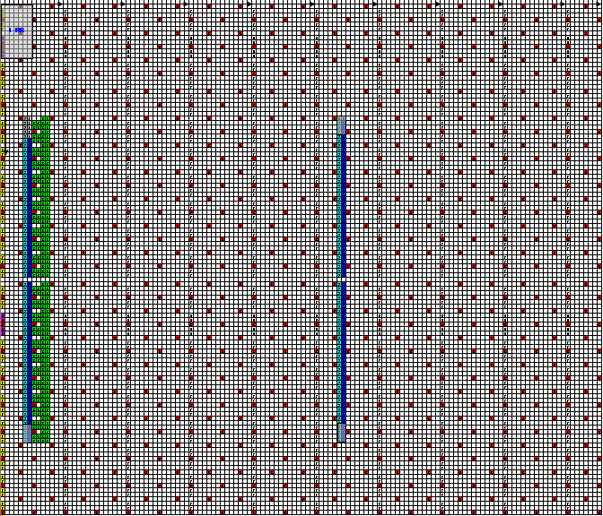

|
LTE Quick Reference Go Back To Index Home : www.sharetechnote.com |
|
|
RSSI(Recieved Signal Strength Indicator)
RSSI is the total power UE observes across the whole band. This includes the main signal and co-channel non-serving cell signal, adjacent channel interference and even the thermal noise within the specified band. This is the power of non-demodulated signal, so UE can measure this power without any synchronization and demodulation.
Following is an example of one downlink radio frame. The red part is the resource elements in which reference signal is being transmitted. Blue and light blue part is for synchronization signal. Yellow part is for PDCCH. Green part is for MIB. Whitepart is PDSCH where user data is being transmitted. RSSI is the total power for all color and any possible noise/interference existing over all these area.

|